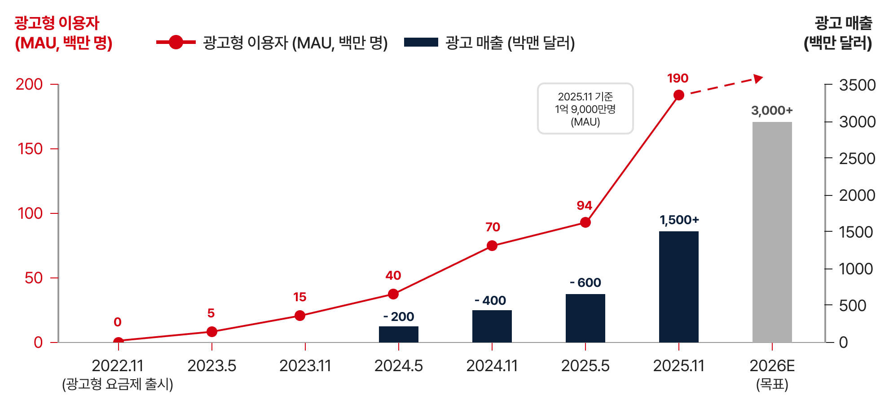
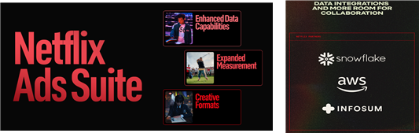
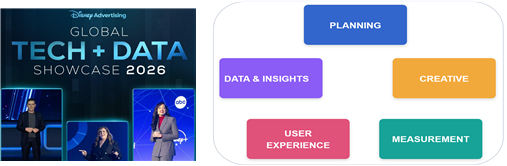
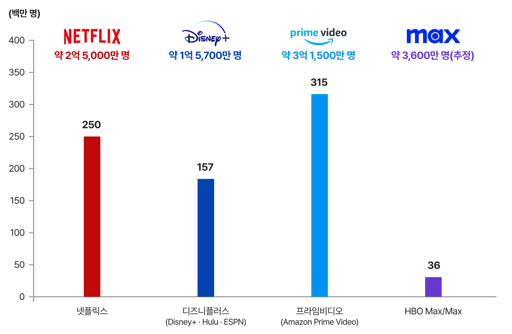
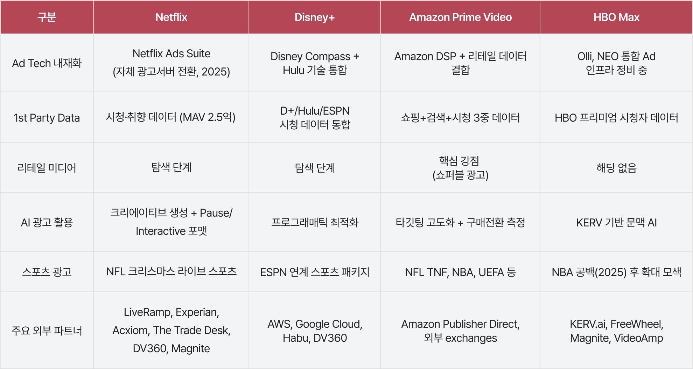

Netflix: 자체 광고기술 플랫폼의 구축으로 경쟁력 강화
넷플릭스는 2022년 11월 광고기반 요금제 출시 이후, 전 세계 유료 가입자 수가 3억 2,500만 명을 돌파하였다.
넷플릭스의 2026년 상반기 광고 수익은 벌써 2025년 전체 광고 매출인 15억 달러를 상회해 전년 대비 2.5배 이상 증가한 것으로 파악된다. 2026년에는 약 30억 달러를 목표로 제시하였다.
넷플릭스는 광고형 요금제가 2024년 4분기 기준, 광고 제공 국가 신규 가입의 55% 이상을 차지한다고 밝혔으며, 2025년 1분기에는 광고형 멤버십이 전분기 대비 30% 성장했다고 발표하였다.
이는 광고형 요금제가 낮은 가격에만 호소하는 다운셀(downsell) 상품이 아니라 신규 유입의 성장엔진으로 작동하고 있음을 시사한다.

[그림 1] 넷플릭스 광고형 이용자(MAU) 증가와 광고 매출 추이
(출처: Netflix 주주서한(2024.1, 2025.1) 및 언론보도 종합, 2026년은 회사 목표치, 저자 정리)
넷플릭스 광고 전략의 핵심은 자체 광고기술 플랫폼의 구축이다. 초기에는 마이크로소프트(Microsoft)의 광고서버에 의존하였으나, 2025년 4월 자체 개발한 넷플릭스 애즈 스위트(Netflix Ads Suite)를 출시하였고 이후 12개 광고 국가 전체로 확대했다. 넷플릭스는 AI 기술을 결합하여 광고 기획-제작-구매 전 단계의 효율성과 정밀도를 높이는 데 초점을 두며, 제작 단계에 AI 기반 미디어 계획·광고 관리 도구를 도입하고, 소재 자동 변환과 콘텐츠 결합 기술을 도어대시·타깃(DoorDash·Target) 등에 시범 적용해 연내 확대할 예정이다. 넷플릭스의 이와 같은 행보는 인공지능과 머신러닝을 광고 사업 전반에 접목하여 자동화·정교화를 추진하는 동시에, 자사가 축적한 방대한 오리지널 콘텐츠와 시청 데이터를 광고 자산으로 활용함으로써 차별적 경쟁우위를 확보하려는 전략으로 평가된다.

[그림 2] 넷플릭스의 Ads Suite와 주요 기술 파트너
(출처: 넷플릭스(2025.5.15.). 넷플릭스 업프런트 2025: 세상이 주목하는 곳 )
Disney+: 통합 번들과 크로스플랫폼 광고 생태계
디즈니플러스는 훌루(Hulu)와 통합된 광고 생태계를 형성하며 광고 수익을 확대하고 있다. 2025년 4분기 기준, 두 회사의 합산 글로벌 구독자 수는 약 1억 9,600만 명에 달하며, DTC 부문은 흑자 전환에 성공하였다.
광고요금제를 선택한 구독자 비율은 디즈니플러스가 약 30%, 훌루 약 65%에 달한다.
디즈니플러스는 2025년부터 소비자 직접 판매(Direct-to-Consumer; D2C) SVOD 사업에서 발생하는 구독수익과 광고수익이 선형TV의 수수료 및 광고수익을 모두 상회했다고 광고형 요금제의 성과를 공식 재무지표로 투명하게 공시하고 있다.
SVOD 광고매출이 최초로 선형TV 광고매출을 넘어섰다는 점은 광고기반 스트리밍 사업이 선형TV 수익을 대체하는 구조로 전환되었음을 의미한다고 볼 수 있을 것이다.
디즈니 광고 전략의 핵심은 Disney+·Hulu·ESPN+를 아우르는 크로스플랫폼에 걸쳐 광고를 판매할 수 있는 역량과 디즈니 컴퍼스(Disney Compass) 데이터 인프라를 활용한 정밀 타겟팅이다. 디즈니는 훌루가 축적한 광고 운영 역량을 Disney+ 생태계에 접목함으로써, 광고주에게 스포츠·엔터테인먼트·어린이 콘텐츠를 아우르는 통합 패키지 상품을 제공할 수 있게 되었다.

[그림 3] 제6회 Global Tech & Data Showcase(2026)와 디즈니의 AI 기반 광고 생태계
(출처: The Walt Disney Company(2026.1.6.). Disney Unveils New Solutions Powering Its Advertising Ecosystem at Sixth Annual Global Tech & Data Showcase )
Amazon Prime Video: 커머스와 연동한 광고 플랫폼
2024년 1월, 아마존 프라임 비디오는 기존 구독자의 기본 시청 환경을 광고 포함 방식으로 전환하는 전략을 단행하였다. 타 경쟁사가 저가 광고요금제를 추가 옵션으로 제공하는 방식과 달리, 아마존은 광고를 기본 설정으로 탑재하고 광고 없는 시청에는 월 2.99달러의 추가 요금을 부과하였다. 2025년 11월, 프라임 비디오의 광고기반 월간 시청자 수는 전 세계 3억 1,500만 명에 달하며 이는 동기간 넷플릭스 MAU 1억 9,000만 명을 크게 상회한다.
아마존의 전체 광고서비스 매출은 2024년 약 562억 달러로, 총매출 대비 약 8.8%를 차지하며,
2026년 1분기에는 전년동기 대비 24% 증가한 약 172억 달러를 기록하였다.
아마존의 광고전략에서 독보적인 차별점은 자사 전자상거래 플랫폼과의 결합이다. ‘콘텐츠 시청→광고 노출→상품 구매’를 구현하는 ‘쇼퍼블 광고(Shoppable Ads)’를 도입하였으며, 아마존 DSP, 리테일 미디어,
브랜드 검색광고, 쇼퍼 데이터를 연동하여 단순 도달이 아닌 구매전환과 리테일 성과까지 통합 평가한다.
또한 아마존 마케팅 클라우드(Amazon Marketing Cloud; AMC)는 광고주가 아마존 자체 익명 데이터와 프라임 비디오 시청 신호를 결합하여 풀퍼널(full-funnel) 분석을 수행할 수 있도록 설계되어 있다. 이러한 아마존의 행보는 ‘리테일 미디어로서의 OTT’라는 새로운 패러다임을 구축하려는 전략으로 해석할 수 있다.
HBO Max: 프리미엄 IP 기반 고가치 광고 전략
워너 브로스 디스커버리(Warner Bros. Discovery; 이하 WBD)가 운영하는 맥스는 글로벌 스트리밍 구독자가 2025년 2분기, 1억 2,570만 명에 달했으며, 전체 신규 구독자의 50%가 광고 지원 요금제를 선택하고 있다.
맥스의 스트리밍 부문 광고 수익은 전년 대비 18% 상승한 2025년 2분기 2.82억 달러를 기록하였다.
맥스의 광고전략은 광고 부하를 늘려 대중형 AVOD로 전환하는 것이 아니라, HBO 계열 프리미엄 이미지를 유지하면서 CPM(Cost Per Mille) 중심의 고단가 광고 수익화를 추구하는 것이다. WBD는 맥스의 광고형 요금제 광고부하가 시간당 4분 미만이라고 밝히고 있으며,
광고 기반 가입자가 최근 2년간 두 배 성장했다고 밝혔다.
또한 맥스는 광고기술(Ad Tech) 전문 기업인 KERV.ai와 협력하여 AI 기반 쇼퍼블 광고 솔루션(Shop with Max, Moments, Storyverse)을 도입하고, 콘텐츠 메타데이터와 AI를 활용한 문맥 기반 광고 및 구매 연계 기능을 구현하였다.
특히 NEO 플랫폼을 통해 스트리밍, 선형TV, FAST, 신디케이션 등 다양한 광고 인벤토리를 단일 인터페이스에서 통합 구매·운영할 수 있도록 지원함으로써 광고 집행의 효율성과 접근성을 높였다.
요약하면, 광고 기반 이용자 규모는 빠르게 확대되고 있으나 각 사업자가 공시하는 지표의 정의가 서로 상이하여 현재로서는 성장 추세만 짐작할 수 있다. 그러나 분명한 것은 4개 사업자가 공표한 차별화 전략을 통해 광고 수익 경쟁에 참여하고 있다는 점이다. 이러한 차별화는 각 사업자의 콘텐츠 전략과 수익모델, 시장 포지셔닝의 차이를 반영하는 것으로 해석할 수 있다.

[그림 4] 글로벌 OTT 사업자별 광고 도달 이용자 비교(각 사별 최신 공표치, 백만 명)
cf. 각 사업자들의 가입자·이용자·시청자 등 지표 정의와 산정 방식이 상이하므로, 절대적 수치 비교보다는 사업자의 성장 추세로 참고할 필요가 있음.
(출처: Variety(2026.5), AdWave(2025), Deadline(2025.11), Business of Apps(2026).)
최근 스트리밍 TV의 성장과 위상 변화는 뚜렷하다. 닐슨에 따르면, 2025년 12월 미국 TV 시청 중 스트리밍 비중은 47.5%로 방송(21.4%)과 케이블(20.2%) 합산을 상회해 역대 최고치를 기록하였다.
닐슨의 광고지원 시청 분석(Ad Supported Gauge)에 따르면, 2025년 1분기 전체 TV 시청의 72.4%가 광고지원 플랫폼에서 발생하였고, 그중 스트리밍이 42.4%로 최대 비중을 차지하였다.
광고시장 전체도 같은 방향으로 움직이고 있다. IAB는 2024년 미국 인터넷 광고 매출이 전년 대비 14.9% 증가한 2,586억 달러를 기록했다고 밝혔으며,
PwC는 2024년 전 세계 광고 수입의 72%가 디지털 포맷에서 발생했으며, CTV(Connected TV)는 광고매출이 510억 달러에 이를 것으로 전망하였다.
이는 OTT가 구독자 확대보다 광고를 통해 소비자 지불의 한계를 보완하는 방향으로 재편되고 있음을 보여준다.
이용자 행태 변화도 이러한 변화를 뒷받침한다. 안테나(Antenna) 조사에 따르면 2025년 1분기, 광고형·무광고형을 병행 제공하는 미국 스트리밍 구독의 46%가 광고형이었으며, 최근 9개 분기 순증 가입의 71%를 광고형 요금제가 견인하였다.
특히 아마존이 선도하는 ‘리테일 미디어 + OTT’ 결합 모델은 OTT 광고 생태계에 새로운 패러다임을 제시하고 있다. 미국 내 리테일 미디어 CTV 광고 지출은 2025년 49.9억 달러에서 2028년 102.8억 달러로 두 배 이상 성장할 것으로 전망된다.
이제 단순히 광고 노출빈도를 넘어 특정 이용자 집단에 광고를 타겟팅하고 성과 측정까지 최적화하는 이른바 ‘퍼포먼스 TV(Performance TV)’ 시대가 열린 것이다.
한편 글로벌 OTT 사업자들의 광고 수익 경쟁은 광고기술(Ad Tech) 역량 확대를 통해 속도전을 내는 모습을 확인할 수 있다. 넷플릭스는 자체 광고 플랫폼 넷플릭스 애즈 스위트(Netflix Ads Suite)를 광고를 지원하는 전 국가로 확대하였고, 디즈니플러스는 훌루의 운영 노하우와 디즈니 컴파스 데이터를 통합하였다. 아마존은 자사 DSP·리테일 데이터를 프라임 비디오(Prime Video)에 직접 연결하였고, WBD는 스튜디오·스트리밍·선형을 아우르는 통합 판매 체계를 정비하고 있다. 이는 광고 서버·측정·세그먼트 연동을 직접 통제해 ‘1st-party 데이터’와 수익 마진을 지키려는 전략적 선택이다.

<표 1> 사업자별 광고 기술 스택(Ad Tech Stack) 비교
(출처: 각 사업자 공시 자료 및 업계 조사 보고서 기반)
국내 OTT 시장은 넷플릭스가 이용자 기반을 주도하는 가운데 티빙, 웨이브, 쿠팡플레이 등 토종 OTT들은 스포츠 중계와 오리지널 콘텐츠 투자로 경쟁하고 있다. 비록 공정거래위원회가 티빙과 웨이브의 합병을 조건부 승인하였음에도 본 계약 체결이 지연되고 있으나,
통합 요금제와 공동 광고 플랫폼은 이미 출시되어 실질적 통합 기반이 구축되었다.
국내에서도 2025년 넷플릭스·티빙 이용자의 약 35%가 광고형 요금제를 선택하고, OTT 광고 시장이 전년 대비 27% 확대될 것이라는 전망은
광고 중심의 성장 전략이 요구됨을 시사한다.
OTT 산업에서 광고는 이제 부가 수익을 넘어 성장의 핵심 축으로 부상하고 있다. 글로벌 OTT 사례를 통해 알 수 있었듯이, 콘텐츠 경쟁력이 실제 광고 수익으로 전환되기 위해서는 이용자 데이터 경쟁력 확보가 필요하다. 그리고 이용자 흐름을 빠르게 포착해 내기 위해서는 광고 기술(Ad Tech) 역량 강화 방안에 대한 시장의 고민은 계속될 것이다.
- 동행미디어 시대(2025.12.24). “[아듀! 2025] 티빙·웨이브, 2년 만에 합병 재시동 거나”.
- 파이낸셜뉴스(2026.1.29). 잘 나가는 OTT ‘광고형 요금제’… 구독자 늘고 매출 뛰어.
- ZDNet Korea(2025.9.19). “티빙·웨이브, 합병 이전에 통합 광고 플랫폼 출범”.
- AdExchanger(2024.5.15). WBD Reasserts Its Place In Ad-Supported Streaming.
- AdWave(2025). Disney Ad-Supported Viewers: 157M Monthly Active Users.
- Amazon(2025.2.6). AMAZON.COM ANNOUNCES FOURTH QUARTER RESULTS.
- Antenna(2025, May). Q2'25 State of Subscriptions: Adds & Ads. Antenna.
- Business Insider(2025.3.5). How Amazon is looking to fend off growing competition from Netflix and others in streaming advertising.
- Business of Apps(2026). Max Revenue and Usage Statistics.
- Deadline(2025.11). Amazon Prime Video Ad-Supported Reach Hits 315M Monthly Viewers.
- Deadline(2026.1.20). Netflix Edges Wall Street’s Q4 Estimates, Says Ad Revenue Topped $1.5B In 2025.
- Evoca(2026.4.2). “Disney Plus Subscribers Stats 2026: Market Share & Revenue”.
- IAB & PwC(2025, April). Internet Advertising Revenue Report: Full Year 2024. IAB.
- KERV.ai(2024.11.21). Warner Bros. Discovery Advertising Sales Introduces New Ad Solutions: Shop with Max and Moments, Bringing Shoppable Entertainment to Streaming.
- Netflix(2026.1.20). Netflix Q4 2025 Shareholder Letter.
- Netflix(2026.5.14). Netflix Upfront 2026: Get Closer.
- Netflix(2025.4.17). Q1 2025 Shareholder Letter. Netflix Investor Relations.
- Nielsen(2025.5.1). Nielsen launches The Ad Supported Gauge, a new look at the ad-supported TV landscape. Nielsen News Center.
- Nielsen(2026.1.20). Streaming shatters multiple records in December 2025 with 47.5% of TV viewing, according to Nielsen's The Gauge™. Nielsen News Center.
- PwC(2025.7.24). Global Entertainment & Media Outlook 2025–2029. PwC.
- Reuters(2025.11.6). Netflix institutes new viewer-based metric as ads reach 190 million viewers worldwide.
- Reuters(2026.4.30). Amazon tops cloud expectations on strong AI demand, share rise.
- Variety(2026.5). Netflix Claims Ad Tier Now Reaches 250 Million Viewers Worldwide, Up From 190 Million.
- The Walt Disney Company(2025.2.5). “Q1 FY2025 Earnings Release”, SEC Form 8-K.
- The Walt Disney Company(2025.11.13). Current Report (Form 8-K). U.S. Securities and Exchange Commission.
- The Walt Disney Company(2026.1.31). FISCAL YEAR 2025 ANNUAL FINANCIAL REPORT.
- Warner Bros. Discovery(2021.6.2). New HBO Max Ad-Supported Tier Is Available Today.
- Warner Bros. Discovery(2025.8.7). Current Report (Form 8-K). U.S. Securities and Exchange Commission.
- Warner Bros. Discovery 광고 홈페이지.